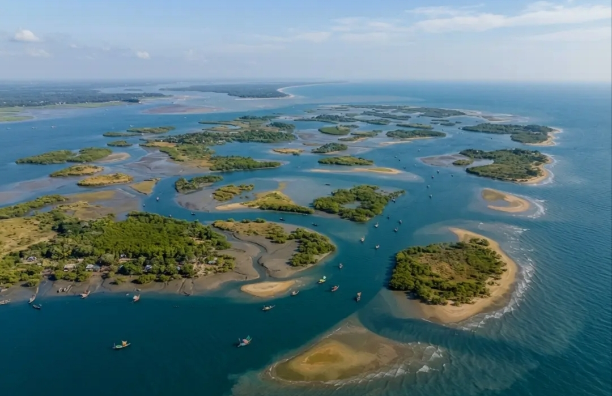
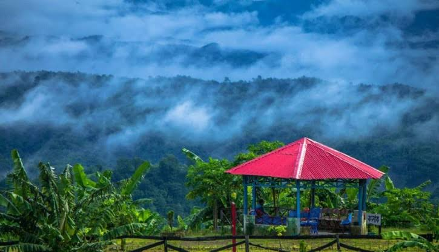

পাহাড়পুর
সোমপুর মহাবিহারের বিশাল ইটের স্থাপনা প্রাচীন বাংলার বৌদ্ধ শিক্ষা ও শিল্পকলার এক অসামান্য নিদর্শন। দেয়ালের পোড়ামাটির ফলকে খুঁজে পাওয়া যায় সমৃদ্ধ অতীতের ছাপ।
দক্ষিণ এশিয়ার সবুজ হৃদয়ে
ছয় ঋতুর রং, অসংখ্য নদীর সুর, প্রাচীন ইতিহাস আর অতিথিপরায়ণ মানুষের গল্পে—আবিষ্কার করুন এক অনন্য দেশ।
একটি দেশের পরিচয়
বাংলাদেশকে বুঝতে হলে তার নদীর কাছে যেতে হয়। এই বদ্বীপে জল ও মাটি মিলে গড়েছে উর্বর সমতল, জীবন্ত জনপদ আর অসাধারণ এক বৈচিত্র্য।
বঙ্গোপসাগরের উপকূল থেকে উত্তরের চা-বাগান, ম্যানগ্রোভের অরণ্য থেকে পাহাড়ি পল্লি—অল্প দূরত্বেই বদলে যায় দৃশ্য, ভাষার টান আর খাবারের স্বাদ। আর যেখানেই যাবেন, মানুষের আন্তরিক অভ্যর্থনা আপনাকে আপন করে নেবে।
দেশের বৈচিত্র্য দেখুনআপনার পরের গল্প
প্রকৃতির বিস্ময় থেকে ইতিহাসের অলিগলি—ভ্রমণ শুরু হোক আপনার পছন্দের কোনো ঠিকানা দিয়ে।
.jpg) 01বিশ্ব
ঐতিহ্য • ম্যানগ্রোভসুন্দরবনবাঘের বনের নীরব মহিমা↗
01বিশ্ব
ঐতিহ্য • ম্যানগ্রোভসুন্দরবনবাঘের বনের নীরব মহিমা↗

02বঙ্গোপসাগর • সমুদ্রকক্সবাজারঢেউয়ের পাশে দীর্ঘ অবকাশ↗
03চট্টগ্রাম পার্বত্য অঞ্চল • পাহাড়সাজেকমেঘের দেশে ভোরের আলো↗.jpg) 04সিলেট •
চা-বাগানশ্রীমঙ্গলচায়ের কাপে
সবুজের সুবাস↗
04সিলেট •
চা-বাগানশ্রীমঙ্গলচায়ের কাপে
সবুজের সুবাস↗
.jpg) 05প্রত্নতত্ত্ব • ইতিহাসপাহাড়পুরইটের গায়ে লেখা হাজার
বছর↗
05প্রত্নতত্ত্ব • ইতিহাসপাহাড়পুরইটের গায়ে লেখা হাজার
বছর↗
.jpg) বন ও বন্যপ্রাণী
বন ও বন্যপ্রাণীপ্রকৃতির মহাকাব্য • ০১
বিশ্বের বৃহত্তম ম্যানগ্রোভ অরণ্য সুন্দরবন বাংলাদেশ ও ভারতের বিস্তৃত বদ্বীপ জুড়ে ছড়িয়ে আছে। জোয়ার-ভাটার নদী, শ্বাসমূলের বন আর কাদামাটির খাঁড়ি মিলে এখানে তৈরি করেছে বিরল এক বাস্তুতন্ত্র।
এটি রয়েল বেঙ্গল টাইগার, চিত্রা হরিণ, কুমির, অসংখ্য পাখি ও জলজ প্রাণীর আবাস। স্থানীয় বনজীবীদের মৌচাক সংগ্রহের ঐতিহ্যও এই বনের সঙ্গে গভীরভাবে জড়িত। নৌভ্রমণে বন দেখুন—নির্দেশক ও সংরক্ষণবিধি মেনে, বন্যপ্রাণীর প্রতি দূরত্ব রেখে।
.jpg)
নোনা বাতাসের ডাক • ০২
কক্সবাজারের দীর্ঘ বালুকাবেলা থেকে টেকনাফের পাহাড়ি উপকূল, সেন্ট মার্টিনের প্রবালদ্বীপ থেকে কুয়াকাটার সূর্যোদয়-সূর্যাস্ত—বাংলাদেশের সমুদ্রতটে আছে নানা রকম ছন্দ।
ভোরের হাঁটা, জেলেদের নৌকা আর সদ্য ধরা সামুদ্রিক মাছ উপকূলের অভিজ্ঞতাকে করে আপন। দ্বীপ ও প্রবালপ্রাচীর ভ্রমণের আগে মৌসুমি আবহাওয়া, নৌযান চলাচল ও স্থানীয় সংরক্ষণ নির্দেশনা জেনে নিন।
ভ্রমণের সঠিক সময় জানুনপাহাড়ের দিনলিপি • ০৩
রাঙামাটি, খাগড়াছড়ি ও বান্দরবানের পাহাড়, হ্রদ ও বন বাংলাদেশের ভূদৃশ্যে এক স্বতন্ত্র মাত্রা যোগ করে। কাপ্তাই হ্রদের নীল জল, সাজেকের মেঘঢাকা দিগন্ত আর নীলগিরির পাহাড়ি পথ প্রতিটি ভ্রমণকে আলাদা করে তোলে।
এ অঞ্চল বহু আদিবাসী ও ক্ষুদ্র নৃগোষ্ঠীর আবাস; তাদের ভাষা, বুনন, খাবার ও জীবনযাত্রা এই পাহাড়ি ভূগোলের অবিচ্ছেদ্য অংশ। স্থানীয় রীতিনীতি সম্মান করুন, অনুমতি ছাড়া মানুষের ছবি তুলবেন না এবং যাত্রার আগে প্রবেশ-নির্দেশনা যাচাই করুন।
.jpg)
.jpg) জল • জীবন • জনপদ
জল • জীবন • জনপদজলের দেশ • ০৪
গঙ্গা-পদ্মা, যমুনা, মেঘনা ও তাদের অগণিত শাখানদী মিলে বাংলাদেশের ভূপ্রকৃতি ও মানুষের জীবন গড়ে তুলেছে। নদী শুধু যাতায়াতের পথ নয়—এটি কৃষি, মাছ, গান, লোককথা ও জীবিকারও উৎস।
বরিশালের খাল, চাঁদপুরের মোহনা কিংবা ভাটিয়ালি গানের সুরে নদীর সঙ্গে মানুষের সম্পর্ক ধরা পড়ে। নৌভ্রমণে স্থানীয় মাঝির সঙ্গে চলুন, লাইফজ্যাকেট ব্যবহার করুন এবং নদীর পাড়ে বর্জ্য না ফেলে জলকে পরিচ্ছন্ন রাখুন।
সময়ের স্তরে স্তরে
প্রাচীন বৌদ্ধ বিহার, সুলতানি মসজিদ, মুঘল দুর্গ আর ঔপনিবেশিক স্থাপনা—বাংলার ইতিহাস ছড়িয়ে আছে দেশজুড়ে।
সোমপুর মহাবিহারের বিশাল ইটের স্থাপনা প্রাচীন বাংলার বৌদ্ধ শিক্ষা ও শিল্পকলার এক অসামান্য নিদর্শন। দেয়ালের পোড়ামাটির ফলকে খুঁজে পাওয়া যায় সমৃদ্ধ অতীতের ছাপ।
খান জাহান আলীর নির্মিত ষাট গম্বুজ মসজিদ ও আশপাশের স্থাপনা পনেরো শতকের নগর পরিকল্পনা, ইটের কারুকাজ এবং আঞ্চলিক ইতিহাসের সাক্ষ্য বহন করে।
পুরান ঢাকার মুঘল দুর্গ কমপ্লেক্সে লালবাগ কেল্লা, পরীবিবির সমাধি ও সুবিশাল বাগান একসঙ্গে দাঁড়িয়ে আছে। অসমাপ্ত নির্মাণের মধ্যেও মুঘল স্থাপত্যের আভিজাত্য স্পষ্ট।
রাজশাহীর বাঘা মসজিদ সুলতানি বাংলার অলংকৃত পোড়ামাটির শিল্পের অনন্য উদাহরণ। এর খিলান, গম্বুজ ও ফলকে স্থানীয় কারিগরির সূক্ষ্মতা খুঁজে পাওয়া যায়।
মানুষের উৎসব
বাংলার সংস্কৃতি বহু ধারার মিলন। গান, কবিতা, মেলা, নকশা আর ঋতু-উৎসব মানুষকে এক সুতোয় বেঁধে রাখে—শহরে ও গ্রামে, প্রজন্ম থেকে প্রজন্মে।
শিল্প ও কারুশিল্প দেখুনবাংলা নববর্ষে রঙিন শোভাযাত্রা, গান, হালখাতা ও ঐতিহ্যবাহী খাবারে জেগে ওঠে নতুন বছরের আনন্দ।
নতুন ধান ঘরে তোলার পর পিঠা, পায়েস ও ভাগাভাগি করে খাওয়ার আনন্দে গ্রামবাংলা উদযাপন করে ফসলের উৎসব।
ফাল্গুনের হলুদ-লাল রং, ফুল, গান ও কবিতায় বসন্তকে স্বাগত জানায় নানা বয়সের মানুষ।
বাউল, ভাটিয়ালি, জারি ও সারি গানের সুর মেলা ও নদীপথে বাংলার জীবন, প্রেম ও বিশ্বাসের কথা বলে।
প্রতিটি অঞ্চলের আলাদা স্বাদ
ভাত ও নদীর মাছের চেনা স্বাদ থেকে মসলার সুগন্ধি বিরিয়ানি, শীতের পিঠা কিংবা চায়ের আড্ডা—খাবারও এ দেশের গল্প বলে।
ভাতের সঙ্গে সরষে ইলিশ, ডাল আর নানা রকম ভর্তা—স্থানীয় উপকরণ ও মৌসুমি রান্নার পরিচিত স্বাদ। নদী ও উপকূলে মাছের পদে অঞ্চলভেদে বদলে যায় মসলা ও রান্নার ধরন।
সুগন্ধি চাল, মাংস ও মসলার ধীর রান্নায় তৈরি এই জনপ্রিয় নগর-খাবার বিশেষ দিনকে করে তোলে আরও আনন্দময়।
নতুন চালের গুঁড়ো, নারকেল ও খেজুরের গুড় দিয়ে তৈরি পিঠা শীতের সকালে ঘরে ঘরে ভাগ করে খাওয়া হয়।
ছানা, দুধ ও গুড়ের মিষ্টিতে আছে অঞ্চলভেদে নিজস্ব স্বাদ। স্থানীয় মিষ্টির দোকানে নতুন কিছু চেখে দেখা ভ্রমণের মধুর অংশ।
নিরামিষ, অ্যালার্জি বা খাদ্যাভ্যাসের প্রয়োজন থাকলে অর্ডারের আগে উপকরণ জেনে নিন।
.jpg) হাতে
হাতেমাটির হাতে, মানুষের মনে
জামদানি তাঁতের সূক্ষ্ম নকশা, নকশিকাঁথার সেলাই, মৃৎশিল্পের মাটির গন্ধ, বাঁশ-বেতের ব্যবহারিক বুনন—বাংলার কারুশিল্পে প্রকৃতি, স্মৃতি আর দক্ষ হাতের ছাপ একসঙ্গে মিশে আছে।
স্থানীয় কারিগর ও ন্যায্য-মূল্যের দোকান থেকে সরাসরি পণ্য কিনলে ঐতিহ্যবাহী পেশাকে টিকে থাকতে সহায়তা হয়। প্রতিটি বুনন ও নকশার পেছনে আছে দীর্ঘ অনুশীলন আর প্রজন্মের জ্ঞান।
.jpg)
বন্যপ্রকৃতির পাশে
সুন্দরবনের বাঘ, জলাভূমির পাখি, নদীর ডলফিন, পাহাড়ের হাতি—বাংলাদেশের বন, নদী ও উপকূল বহু বন্যপ্রাণীর আবাস। টাঙ্গুয়ার হাওর ও হাকালুকি হাওরের মতো জলাভূমি পরিযায়ী পাখির জন্য গুরুত্বপূর্ণ আশ্রয়।
প্রকৃতি দেখুন নীরবে ও নিরাপদ দূরত্ব থেকে। বন্যপ্রাণীকে খাবার দেবেন না, বাসা বা আবাসস্থল বিরক্ত করবেন না এবং বর্জ্য সঙ্গে ফিরিয়ে আনুন। সংরক্ষিত এলাকায় স্থানীয় গাইডের নির্দেশনা মেনে চলুন।
প্রকৃতির বন্ধু হয়ে ভ্রমণ করুনসিলেটের সবুজ সকাল
শ্রীমঙ্গল ও সিলেটের ঢেউখেলানো চা-বাগান, বৃষ্টিভেজা পথ ও ছোট টিলায় আছে প্রশান্তির আলাদা ছন্দ। দূর থেকে দেখা সবুজ সারির পেছনে রয়েছে বাগানশ্রমিকদের পরিশ্রম ও বহু প্রজন্মের ইতিহাস।
অনুমতি নিয়ে বাগানের নির্দিষ্ট পথে হাঁটুন, শ্রমিকদের কাজে বাধা দেবেন না এবং স্থানীয় চা ও সাতরঙা চায়ের গল্প শুনুন। কাছেই লাউয়াছড়া জাতীয় উদ্যানের বনে বিরল পাখি ও প্রাণীর দেখা মেলে।
.jpg)
.jpg) একটি উঠোন, হাজার গল্প
একটি উঠোন, হাজার গল্পবাংলাদেশের হৃদস্পন্দন
হাটের সকালের ব্যস্ততা, গ্রামের উঠোনে চায়ের আমন্ত্রণ, নৌকার মাঝির গান, শহরের রিকশাচিত্র—বাংলাদেশের দৈনন্দিন জীবন ছোট ছোট দৃশ্যেই নিজের পরিচয় দেয়।
অতিথিকে আপন করে নেওয়ার সহজ স্বভাব এই দেশের ভ্রমণকে স্মরণীয় করে। স্থানীয়দের সঙ্গে কথা বলুন, অনুমতি নিয়ে ছবি তুলুন, শালীন পোশাক ও আচরণ বজায় রাখুন এবং তাদের সময় ও জীবিকার প্রতি সম্মান দেখান।
মানুষ ও সংস্কৃতির আরও গল্পঋতু বদলায়, বাংলাদেশও
প্রতিটি ঋতুর আলাদা রং ও ভ্রমণ-অভিজ্ঞতা আছে। আপনার পছন্দের দৃশ্য ও গন্তব্য অনুযায়ী সময় বেছে নিন।
তুলনামূলক শুষ্ক ও আরামদায়ক আবহাওয়ায় ঐতিহাসিক স্থান, শহর, উপকূল ও গ্রাম ভ্রমণের জনপ্রিয় সময়। শীতের পিঠা ও পাখি দেখার জন্যও উপযুক্ত।
ফুল, উৎসব ও মৃদু উষ্ণতার সময়। শহরের সাংস্কৃতিক অনুষ্ঠান ও চা-বাগানের সবুজ পথে বেড়ানোর জন্য সুন্দর ঋতু।
নদী ও জলাভূমি পূর্ণ হয়, চারপাশে সবুজের বিস্তার। তবে বৃষ্টি, বন্যা বা ভূমিধসের ঝুঁকি থাকে—যাত্রার আগে আবহাওয়া ও স্থানীয় পরামর্শ যাচাই করুন।
মেঘ সরে গেলে আকাশ হয় স্বচ্ছ, বাতাসে আসে উৎসবের আমেজ। নদী, গ্রাম ও ঐতিহাসিক স্থাপনা ঘুরে দেখার স্নিগ্ধ সময়।
আবহাওয়া বছরভেদে পরিবর্তিত হতে পারে। পাহাড়, সমুদ্র ও দ্বীপযাত্রার আগে সর্বশেষ স্থানীয় নির্দেশনা জেনে নিন।
সহজ প্রস্তুতি, সুন্দর যাত্রা
গন্তব্যের ধরন অনুযায়ী পরিকল্পনা করুন। স্থানীয় নিয়মকে সম্মান করলে আপনার অভিজ্ঞতাও হবে স্বচ্ছন্দ, দায়িত্বশীল ও আনন্দময়।
ঢাকা থেকে আন্তঃনগর ট্রেন, বাস ও অভ্যন্তরীণ ফ্লাইটে বিভিন্ন অঞ্চলে যাওয়া যায়। সড়ক ও নদীপথে সময় বেশি লাগতে পারে; ছুটির দিনে টিকিট আগেভাগে বুক করুন।
গরম ও আর্দ্র আবহাওয়ার জন্য হালকা পোশাক, পানির বোতল, সানস্ক্রিন ও বৃষ্টির সময় ছাতা রাখুন। ধর্মীয় স্থান ও গ্রামে শালীন পোশাক বেছে নিন।
ভ্রমণের আগে সরকারি ভ্রমণ-পরামর্শ, স্থানীয় প্রবেশনীতি ও আবহাওয়ার খবর দেখুন। পাহাড়ি ও সীমান্তবর্তী এলাকায় অনুমতি বা গাইডের প্রয়োজন হতে পারে।
স্থানীয় মুদ্রা বাংলাদেশি টাকা। শহরের বাইরে নগদ অর্থ সঙ্গে রাখুন; মোবাইল নেটওয়ার্ক ও কার্ড পেমেন্ট সব জায়গায় সমানভাবে নাও মিলতে পারে।
একটি অনুপ্রেরণামূলক পথ
এটি একটি নমনীয় ধারণা—দূরত্ব, আবহাওয়া ও আপনার আগ্রহ অনুযায়ী দিন বাড়ান বা কমান।
পুরান ঢাকা, লালবাগ কেল্লা, জাতীয় জাদুঘর ও নদীর ঘাট দিয়ে শহরের ইতিহাস ও জীবনযাত্রার পরিচয় নিন।
শ্রীমঙ্গলের চা-বাগান, লাউয়াছড়া বন ও সিলেটের নদী-ঝরনার পথে প্রকৃতির বৈচিত্র্য দেখুন।
কক্সবাজারে সমুদ্রের সময় কাটান; আবহাওয়া ও চলাচলের নিয়ম মিললে কাছের দ্বীপ বা উপকূলীয় গ্রাম ঘুরে দেখুন।
যত্ন নিয়ে দেখুন, যত্নে রাখুন
প্রাকৃতিক ও ঐতিহাসিক সম্পদ সবার। আপনার ছোট সিদ্ধান্ত স্থানীয় পরিবেশ, জীবিকা ও ঐতিহ্যকে সম্মান জানাতে পারে।
একবার ব্যবহারযোগ্য প্লাস্টিক কমান, নিজের বর্জ্য সঙ্গে ফিরিয়ে আনুন।
স্থানীয় গাইড, খাবার ও কারুশিল্প বেছে নিয়ে এলাকার অর্থনীতিতে অবদান রাখুন।
প্রাণী, বন ও প্রবালকে দূর থেকে দেখুন; কোনো কিছু সংগ্রহ বা খাওয়াবেন না।
ছবি তোলার আগে অনুমতি নিন, স্থানীয় সংস্কৃতি ও ধর্মীয় রীতিকে সম্মান করুন।
একটি দেশ, অসংখ্য অনুভব
একটি নদীর ধারে থামুন। একটি গল্প শুনুন। নতুন কোনো পথ ধরে এগিয়ে যান। আপনার পরের স্মৃতিটি হয়তো এখানেই অপেক্ষা করছে।
আবার শুরু থেকে দেখুন